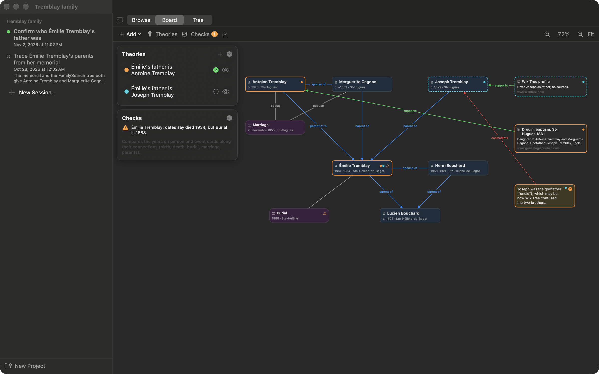
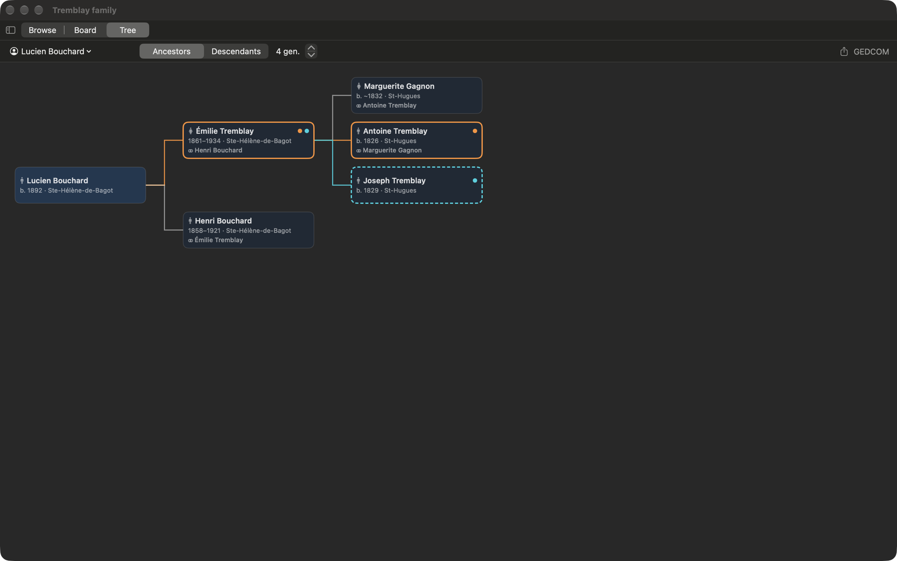
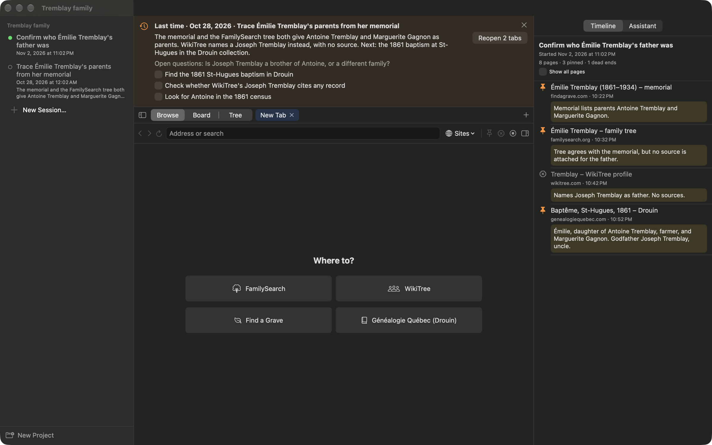

Genboard
A native macOS workbench for family-history research. Browse FamilySearch, WikiTree, Find a Grave and the Drouin collection in research sessions, keep track of what each source says, test competing theories on a board, and export the result as a family tree.
Get Genboard
There's no signed download yet, so build it from source. You need Xcode 26 and XcodeGen (brew install xcodegen).
git clone https://github.com/patbonecrusher/genboard
cd genboard && xcodegen generate
open Genboard.xcodeproj


What it does
Research sessions
A built-in browser keeps every page you open in the session's history, so twenty tabs and a folder of screenshots become one timeline.
Pins and dead ends
Pin a page with ⌘D to save a screenshot, the text you selected and a note on why it matters. Mark searches that led nowhere so you don't repeat them.
Pick up where you left off
Closing a session asks where you stopped, what's next and what's still open. The next session starts with that note and its to-dos.
A board for the evidence
Person, event, evidence and note cards, connected as parent, spouse, child, supports or contradicts. Drag pinned pages straight onto it.
Competing theories
Track rival explanations, such as two candidate fathers, side by side. Each has a status, evidence for and against, and its own to-dos.
Checks
Catches burials dated before a stated death, people appearing after they died, marriages at ten and implausible parent ages. They run locally and cost nothing.
Family tree and GEDCOM
Ancestor and descendant charts built from the board. Export people, families, events and sources as GEDCOM for other genealogy software.
Claude, if you want it
With your own Anthropic API key, ask questions about your research, transcribe handwritten parish records, and turn a record into suggested cards you review first.
Scapple boards
Import existing Scapple boards. Notes keep their places and colors, and lines and arrows become connections.
Your research stays on your Mac. Genboard has no accounts and no analytics, and the developer never receives your data. The only thing that leaves your Mac is what you send to Claude when you use the AI features, with your own API key. See the Privacy Policy.
Contact
Bug reports and feature requests are welcome on GitHub Issues. The source code is on GitHub.